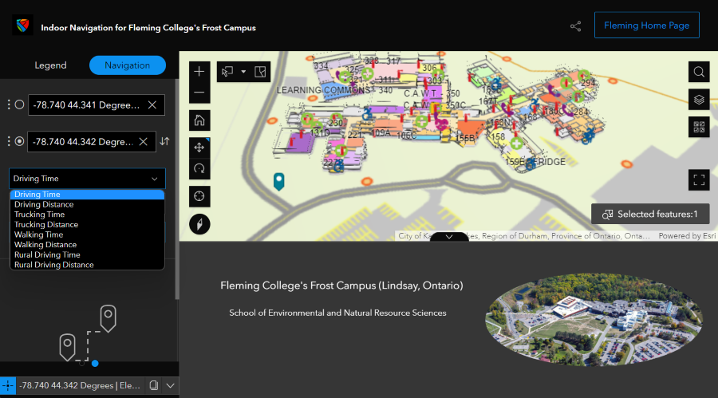
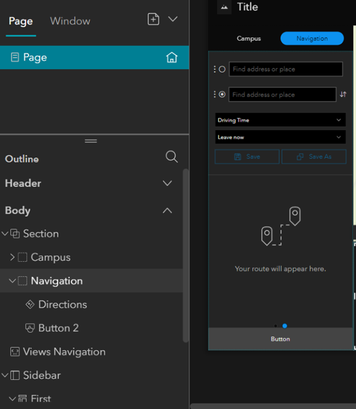
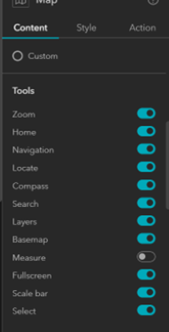

Experience Builder is an easy-to-use web solution. It does not require a server and is available to ESRI and non-ESRI users. This solution allows web maps designed in AGOL to be imported and displayed in the main frame. There are many sidebar display options with widgets to choose from. The sidebars can display things like a legend, text, images, charts, navigations, etc. Experience Builder works best if prior to importing the maps, the extents are set, the basemap is removed, and only the necessary data is included.
Experience Builder
Project Applicability Score: 4 / 5

The use of Experience Builder as a no-code web-app
What Worked Well
Experience Builder is a great Public-Facing web-solution.
- Overall this web solution produces a nice interface, which can be customized as there are many widgets available.
- You can add 2D or 3D maps.
- It is possible to have multiple pages to show different maps or different sections of a map.
- It works well on desktops, tablets, and mobiles because the views are customizable.
- It does have a navigation component, which uses geocoded addresses. This is useful for getting directions from one location to another.
- You can add images, charts, a legend, etc.
Testing out Navigation in Experience Builder:

The process of setting up navigation:

An example of all the options available:

Lessons Learned
Experience Builder may take more experimentation with things than other web-solutions to fully understand how to create a quality web experience.
- Although it has a navigation section, it is not great for indoor navigation.
- There is a widget to get precise coordinates by clicking on the map, which users can copy/ paste these coordinates into the navigation section. This could be a work-around for only relying available addresses (as a specific location, like a room within a building can be selected). However, copying/ pasting coordinates each time is not very user-friendly.
- After publishing the experience builder for the public, each route request uses credits.
- You can add a Filter Widget to search for specific attributes within your layers, for example, room numbers, buildings, or fire hydrants. However, more experimentation with this is necessary.
- It does not work offline.
- There is not as much customizability as full-code solutions.
See the results below of the final version for the Open House

* Note: Our final results are best viewed on mobile layout.